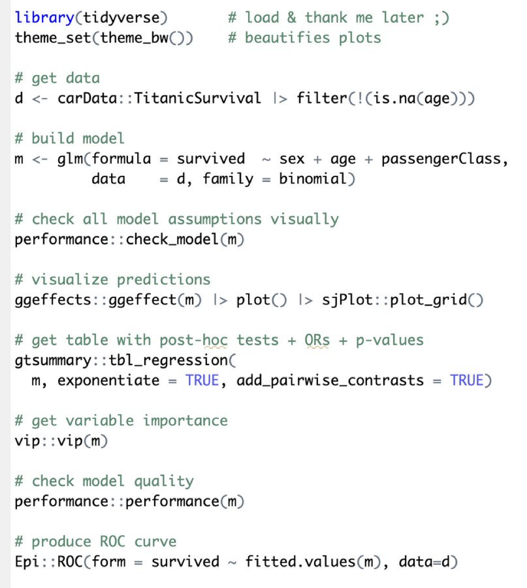

g = gr.Digraph()
g.edge("Disease Severity (C)", "Hypercapnia Severity (E)")
g.edge("Disease Severity (C)", "Readmission Risk (O)")
g.edge("Hypercapnia Severity (E)", "Readmission Risk (O)")
svg = g.pipe(format="svg").decode("utf-8")
HTML(svg)6 Intro to Regressions
Important
This section is still under construction
Statistical modeling can be counter intuitive, so let’s pause and clarify what we want to achieve before jumping into details.
First, we’ll discuss why we use regression: what’s the purpose, and what does it help us understand? Next, we’ll explore the idea of a “model” in regression, emphasizing that—just as with statistical tests—your decisions about representing data influence your results. Finally, we’ll wrap up with some practical advice, though we’ll only scratch the surface of this rich topic.
6.1 What can regression models do for you?
Regression models have multiple uses; it’s helpful to clarify your goal upfront. One intuitive way to think about their purpose is by grouping them into three main types: descriptive, predictive, or causal (as described in https://onlinelibrary.wiley.com/doi/full/10.1002/sim.10244)
Consider a regression model that predicts weight based on age, sex, and height. Depending on your objective, you might ask different questions:
| Purpose | Example Question | Goal |
|---|---|---|
| Descriptive | “For every extra inch of height, how much heavier is someone on average (after adjusting for age and sex)?” | Summarize patterns you’ve already observed |
| Predictive | “If I meet a 40-year-old man who is 5′10″, how much should I expect him to weigh?” | Make reliable guesses about unseen data |
| Causal | “If I became two inches taller, how would my weight change?” | Test a hypothesis about cause-and-effect |
Researchers typically specify clearly when they’re making predictions, but they often blur the lines between descriptive and causal statements. For example, you’ll frequently see euphemisms like “linked to” or “associated with,” followed by suggestions that changing a predictor could influence the outcome. This confusion between description and causation is a widespread issue(academic.oup.com/aje/article/191/12/2084/6655746). Don’t add to it. If your goal is to understand cause-and-effect relationships, communicate that.
6.1.1 When should you adjust your estimate?
To understand when “adjusting” for other variables helps and when it doesn’t, it’s essential to distinguish clearly between three related concepts: confounding, effect modification (or, similarly, interactions), and mediation. All three describe ways a third variable can influence the relationship between an Exposure (E) and an Outcome (O).
We’ll use Directed Acyclic Graphs (DAGs) to illustrate these concepts. DAGs visually represent your assumptions about how variables relate to each other. These are assumptions you assume for the purpose of your analysis, rather than directly test. You can create DAGs using tools like Dagitty (www.dagitty.com), the dagitty/diagrameR packages (R), dag (STATA) or Python’s Graphviz package.)
DAG reference: https://www.ncbi.nlm.nih.gov/pmc/articles/PMC7124493/
6.1.1.1 Confounders
A confounder (abbreviated, C) is a variable that is associated with the exposure, precedes it, and also independently affects the outcome.
Consider this example: you’re interested in how the severity of hypercapnia during acute hypercapnic respiratory failure influences readmission risk (a causal question).
| Role | Variable | Description |
|---|---|---|
| Exposure (E) | Severity of hypercapnia | Higher PaCO₂ indicates more severe hypercapnia |
| Outcome (O) | Readmission risk | Whether the patient is readmitted within 28 days |
| Confounder (C) | Disease severity | Overall illness severity (e.g., FEV₁) |
Using the python GraphViz package, this DAG can be visualized as
In this example, you can imagine an example where there appears to be an association between hypercapnia severity and risk of readmission, even if - hypothetically - there isn’t one, if patients who have more severe lung disease tend to have higher PaCO₂ levels. Thus, to isolate the effect of hypercapnia itself, you need to account for the severity of lung disease.
6.1.1.2 Mediators
Next, consider CO₂ narcosis (altered mental status from severe hypercapnia). Should we adjust for CO₂ narcosis when estimating the impact of hypercapnia on outcomes like readmission risk?
CO₂ narcosis clearly meets some criteria for adjustment: it’s associated with both hypercapnia (the exposure) and readmission risk (the outcome). But, CO₂ narcosis doesn’t cause hypercapnia; it’s a consequence of it. This makes CO₂ narcosis a mediator (abbreviated M), rather than a confounder.
A mediator is a variable that is on the causal pathway between exposure and outcome. Mediators never cause the exposure, nor do they result from the outcome. Instead, they represent a step through which the exposure affects the outcome.
| Role | Variable / Example | Description |
|---|---|---|
| Exposure (E) | Severity of hypercapnia | Baseline PaCO₂ level on admission |
| Mediator (M) | CO₂ narcosis (altered mental status) | Developed after hypercapnia; lies on path between E and O |
| Outcome (O) | Readmission risk | Whether the patient is readmitted within 28 days |
g = gr.Digraph()
g.edge("Hypercapnia Severity (E)", "Altered Mental Status (M)")
g.edge("Altered Mental Status (M)", "Readmission Risk (O)")
g.edge("Hypercapnia Severity (E)", "Readmission Risk (O)")
svg = g.pipe(format="svg").decode("utf-8")
HTML(svg)If we include CO₂ narcosis in our regression model, what happens?
Think of it this way: hypercapnia may influence readmission risk in two distinct ways:
- Indirect pathway: Hypercapnia → CO₂ narcosis → readmission. This is the effect that is mediated through M)
- Direct pathway: Hypercapnia → readmission through other mechanisms (not involving M)
Including CO₂ narcosis in the model removes (“controls out”) the indirect pathway. In other words, the regression result would represent only the effect of hypercapnia independent of CO₂ narcosis (the direct effect*).
Typically, we’re interested in the entire impact of hypercapnia on outcomes, the total effect, which includes both direct and indirect pathways. Thus, you usually should avoid including mediators in your regression models.
Additional assumptions for valid mediation analysis
In the case where you really are interested in splitting apart the direct and indirect pathways, there are a few additional assumptions for a valid mediation analysis, collectively termed sequential ignorability. They include:
- No unmeasured confounding for the relationships:
- E → O
- E → M
- M → O
- No confounders of the M → O relationship are caused by E
Similarly, there are other variables which are neither confounders nor mediators (such as variables merely correlated with the mediator or variables that result from the outcome) that will cause confusion and yield misleading or uninterpretable results if they’re included in regression models.
6.1.1.3 Effect Modifier
An effect modifier (often abbreviated Z) is a third variable that changes (modifies) the strength or direction of the relationship between an exposure (E) and an outcome (O).
Returning to our example, imagine that the relationship between hypercapnia and readmission risk depends on the patient’s primary diagnosis:
• In COPD, elevated PaCO₂ may cause persistent impairment of respiratory drive, increasing the likelihood of readmission despite therapy.
• In Obesity Hypoventilation Syndrome (OHS), elevated PaCO₂ may respond effectively to nocturnal BPAP therapy, making readmissions less likely.
Thus, the impact of hypercapnia on readmission risk differs depending on whether the patient has COPD or OHS. In other words, the primary diagnosis modifies the effect of hypercapnia on readmission risk, making it an effect modifier.
| Role | Variable | Description |
|---|---|---|
| Exposure (E) | Severity of hypercapnia | PaCO₂ level at admission |
| Effect modifier (Z) | Primary diagnosis | COPD vs OHS alters how PaCO₂ influences readmission risk |
| Outcome (O) | Readmission Risk | Whether the patient returns within 28 days |
g = gr.Digraph()
g.edge("Hypercapnia Severity", "Altered Mental Status")
g.edge("Altered Mental Status", "Readmission Risk")
g.edge("Hypercapnia Severity", "Readmission Risk")
svg = g.pipe(format="svg").decode("utf-8")
HTML(svg)
# Note: there is not a uniformly agreed upon way to represent an effect modifiers in DAG, though there are proposals
Scale matters in effect modification
Whether there’s effect modification depends on scale:
| Scale | Question answered | Possible outcome |
|---|---|---|
| Relative (e.g., risk ratio, odds ratio) | “Does the proportional effect differ by subgroup?” | Subgroups may differ on the RR scale but not on the additive scale. |
| Additive (e.g., risk difference) | “Does the absolute effect differ by subgroup?” | Effect modifiers can disappear (or appear) when you switch scales. |
There is not consensus about which is preferred. Generalizing, relative effect modification better captures biologic interactions while absolute effect modification better captures the implications for decision-making. Always state the scale (relative effect modification vs. absolute effect modification) and remember that a modifier on one scale may vanish on another.
What happens if you include an effect modifier as a regular predictor in your regression model?
Unfortunately, you don’t capture the relationship you’re interested in, as the model would provide:
• An estimate of how diagnosis (COPD vs OHS) influences readmission risk, after adjusting for PaCO₂. • A single, averaged estimate of how PaCO₂ influences readmission risk, after adjusting for the primary diagnosis.
What you really want is to represent how the effect of PaCO₂ differs depending on the diagnosis: two distinct estimates rather than a single averaged effect. To accomplish that, you must explicitly include an interaction term (e.g., PaCO2 × diagnosis) in your regression model.
Because regression models represent effect modification through interaction terms, the terms effect modification and interaction are often used semi-interchangeably.
Interactions need more power
Expect to need much larger sample sizes (4-16 ×) to detect interactions with the same confidence you’d expect for main effects:
-
Interactions are usually smaller than main effects.
- You’re separating the signal from two variables at once (exposure × modifier), so standard errors inflate.
Even so, you should include the interaction term in your plan if biological or clinical reasoning suggests effect modification… just remember that it’s not very strong evidence against effect modification if the interaction term is not statistically significant.
6.1.2 So, what should go in your regression model?
We’ve discussed three ways that a third variable can influence the relationship between an exposure and an outcome:
• Confounding (C)
• Mediation (M)
• Effect Modification (Z)Each scenario changes the meaning of your regression results. Whether and how you include these variables depends entirely on what you’re trying to measure—your estimand—and your assumptions about how each variable fits into the causal structure.
Here’s the critical takeaway: You can’t determine the role of variables just by looking at the data.*
Confounders, mediators, and modifiers can all appear very similar in raw data. Instead, you must carefully reason through the role each variable plays in your scenario, clearly define your estimand, and then build a model that matches these assumptions. Directed Acyclic Graphs (DAGs) help you explicitly lay out and communicate these assumptions, clarifying your model-building decisions.
The need to explicitly define assumptions has important implications for how you should build regression models. Most importantly:
Do NOT simply include all available variables in your model and hope for the best.
Even with large datasets, including too many predictors without careful thought can obscure what your results actually mean, or worse, mislead you entirel. To emphasize the point clearly:
Do NOT just throw everything into your regression model.
To drive this home, the next section (optional) introduces a fourth type of variable, called a collider, illustrating even more clearly why careful selection of variables matters.
Why do tall NBA players appear to be bad at free throws?
This surprising observation illustrates collider(-stratification) bias. A collider is a variable influenced by two (or more) other variables. Adjusting for (or restricting your analysis to a certain value of) a collider can create artificial associations that don’t exist in reality.
Example: NBA Player Selection
- Being tall → more likely to become an NBA player
- Having excellent free-throw accuracy → more likely to become an NBA player
Thus, “NBA player” is a collider—it results from both height and shooting accuracy:
g = gr.Digraph()
g.edge("Being very tall", "Drafted into NBA")
g.edge("Excellent free-throw accuracy", "Drafted into NBA")
svg = g.pipe(format="svg").decode("utf-8")
HTML(svg)When you look only at NBA players (essentially, ‘adjusting for’ the collider), you create an artificial, inverse relationship: it looks like taller players are poorer free-throw shooters, even if no real-world correlation exists. In reality, what you’re finding is: “there’s two ways to get into the NBA. So, folks who got in because they’re good shooters are probably less tall and people who got in because they’re tall are likely worse shooter.”
Takeaway: Conditioning on a collider distorts reality. Carefully identify colliders in your DAG, and avoid adjusting for them.
This may seem niche, but collider-stratification is everywhere, once you look for it. The “obesity paradox” is one medical example. Consider ARDS.
You must be very hypoxemic to have ARDS. There are two reasons you might be hypoxemic:
- obesity, leading to atelectasis and shunting
- severe lung injury
g = gr.Digraph()
g.edge("Obesity", "Hypoxemia")
g.edge("Lung Injury", "Hypoxemia")
svg = g.pipe(format="svg").decode("utf-8")
HTML(svg)So, if you look at people with ARDS (essentially, conditioning on hypoxemia), you expect a negative relationship between BMI and the degree of lung injury. When people unfamiliar with collider-stratification find that relationship, they look for explanations about “the protective effect of obesity”. Doubtful there is such a thing.
What you should do instead (as endorsed by the editors of all the main PCCM journals) is before you even look at your data, sit down and think through the relationship between your exposure of interest and your outcome of interest and start creating a DAG.
- What things are confounders (even if you can’t measure them, including them in the diagram because it’ll help clarify what residual confounders will be left after you’ve constructed your best model, which will undoubtedly be imperfect)?
- Consider what the thing you’re interested in estiamting is (is it the total effect?), and what things are mediators?
- What things might modify the effect of interest?
Once your diagram is done, it implies what your ideal regression model might be. Include only the variables that seem important in your DAG. Then, you have to further consider the limitations of the data (ie. size, how well each can be measured), and decide which confounders can be adjusted for under the actual constraints in your project.
How does sample size limit what can be in a regression?
Think of regression as trying to pull signal (the actual underlying relationships) out of noise (randomness from comes from only having a few, imperfectly measured data points).
Consider the case where there’s one predictor, two points. With just two data points you can always draw a line (fit a model) that fits perfectly… but the “fit” is meaningless. Same thing occurs if there’s two predictors, three points. In three-dimensional space you can always fit a plane exactly through three points—for the same reason. In both cases, the perfect fit just reflects that if you give yourself enough degrees of freedom, you can perfectly fit your data, but it may not reflect the underlying trends. The model memorizes random noise instead of learning the underlying relationship.
Many rules of thumb (and more rigorous appraoches) exist to determine how many predictors is too many.
It’s better to err on the side of including less.
Then, finally, you can run your regression.
6.2 The logic of using regression for causal inference
Recall that when we observe an association between an exposure and an outcome, there are four possible explanations:
1. Chance
2. Confounding (another factor influencing both exposure and outcome)
3. Bias (systematic error resulting from measurement or design)
4. Causation (a true effect)When we use regression for causal inference, we’re typically making an argument by exclusion (the disjunctive syllogism):
If chance, confounding, and bias can’t explain the association, it must be causal.
The probability of chance alone explaining an observed observation is the p-value. The plausibility that bias could explain it is addressed by the methods of the paper (how the study was designed and how the effects were measured).
In randomized studies, random assignment makes confounding improbable (if the sample is big enough). However, in observational (non-randomized) research, statistical adjustments to address the possibility of confounding are required. This is the most common use of regression.
However, for regression to adequately adjust for confounders (ie. confounders are )
Regression comes with additional assumptions:
- Independent observations (special “mixed models” can relax this)
- The form of the output variable is correct*
- The form of the predictor variables are correct
- The relationship between the predictors are properly specified.**
- Additional constraints (e.g. constant variance)
Lastly, all potential confounders must be in the model (an assumption called ‘conditional exchangeability’)
Thus the logic is: if the assumptions of the models hold in reality, then the described relationships are valid
No model is perfect, but some models are useful
- Morris moment(TM)
6.3 What type of regression is needed?
Output variable (aka the dependent variable, predicted variable) form determines the type of regression :
| Level of measurement of outcome variable | Two Independent Groups without Confounding Adjustment | Two Independent Groups without Confounding Adjustment |
| Dichotomous | Chi2 Test | logistic regression |
| Unordered categorical | Chi2 Test | multinomial logistic regression |
| Ordered categorical | Wilcoxon-Mann-Whitney | ordinal logistic regression |
| Continuous (normally distributed) | T-test | linear regression |
| Censored: time to event | Log-rank test | Cox regression |
From: From: Stoddard GJ. Biostatistics and Epidemiology Using Stata: A Course Manual. Salt Lake City, UT: University of Utah School of Medicine.
6.4 How do you interpret the regression results?
Regression coefficient = What change in the outcome do you expected if you change the predictor by 1 unit, holding all other variables constant
- For linear regression: additive change in outcome
- For logistic regression: multiplicative change in odds of the outcome
- For Cox regression: multiplicative change in the hazard of the outcome.
Example:
Consider, if we want to test whether ‘splenectomy’ and ‘got_cteph?’ are associated, we could use a chi2 test:
Alternatively you could specify a logistic regression
(“GLM” standards for ‘general linear model’. Logistic regression is a type of glm where the family is binomial)

(https://www.dagitty.net/dags.html Daggity is a tool to specify such diagrams)

Consider: do you want the adjusted or the unadjusted estimate?
Hint: it depends….
Distributions:

Regressions -
[ ] create the linear regression interpretation and example.
logic of different choices… ie. “under the following assumptions this is the estimate” - thus, if you make different assumptions, you make a different answers. Therefore, knowing the assumptinos are very important for knowing whether the result is believable.
Models - you choose a way to distill the relationships that are contingent on certain assumptions - and if those assumptions hold, your conclusions follow.
DAGs What does it mean to control? https://idlhy0218.github.io/page%20building/blog.html#control
Conceptually - you are modeling something… all models are wrong, some models are useful. You just need to know the assumptions you are implying by your choice, so that you can make an argument about whether the assumptions are warranted or not .
6.4.1 Functional Forms
Functional forms *** dichotomization vs flexible models
What type of questions can regression be used? - controlling for the effect of one thing on another. - prediction
— how to do in python: python resources for how to do that section of it: https://ajthurston.com/predprobs?utm_source=substack&utm_medium=email

TODO:
- pull in definition code.
- make links automatically.